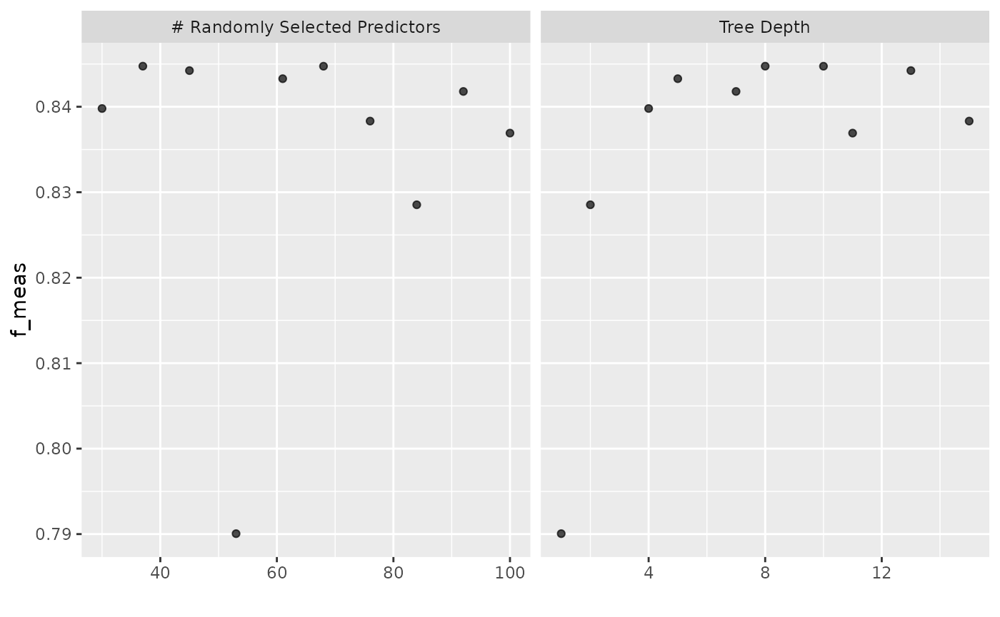

Supervised Learning Using tidymodels and gibasa
paithiov909
2023-03-04
Source:vignettes/textrecipes.Rmd
textrecipes.Rmdデータの準備
livedoorニュースコーパスを使います。このコーパスのカテゴリ分類はかなり易しいタスクであることが知られている（というか、一部のカテゴリではそのカテゴリを同定できる単語が本文に含まれてしまっている）ので、機械学習を手軽に試すのに便利です。テキストの特徴量をもとに以下の9カテゴリの分類をします。
- トピックニュース
- Sports Watch
- ITライフハック
- 家電チャンネル
- MOVIE ENTER
- 独女通信
- エスマックス
- livedoor HOMME
- Peachy
ldccrでデータフレームにします。
if (requireNamespace("ldccr", quietly = TRUE)) {
tbl <- ldccr::read_ldnws() |>
dplyr::mutate(doc_id = as.character(dplyr::row_number()))
}
#> Parsing dokujo-tsushin...
#> Parsing it-life-hack...
#> Parsing kaden-channel...
#> Parsing livedoor-homme...
#> Parsing movie-enter...
#> Parsing peachy...
#> Parsing smax...
#> Parsing sports-watch...
#> Parsing topic-news...
#> Done.ここでは、未知語でない語で、かつ、名詞・形容詞・動詞である語についてのみ抽出し、IPA辞書に収録されている原形の分かち書きにします。このとき、漢字だけで書かれている名詞の連続については複合名詞と見なし、ひとつのトークンとします。
corpus <- tbl |>
dplyr::mutate(
text = audubon::strj_normalize(body),
chunk = dplyr::ntile(doc_id, 10)
) |>
dplyr::group_by(chunk) |>
dplyr::group_map(function(df, idx) {
data.frame(
doc_id = df$doc_id,
text = df$text
) |>
gibasa::tokenize() |>
gibasa::prettify(col_select = c("POS1", "Original")) |>
dplyr::mutate(
token = dplyr::if_else(is.na(Original), token, Original)
) |>
gibasa::mute_tokens(
!POS1 %in% c("名詞", "形容詞", "動詞")
) |>
gibasa::collapse_tokens(
POS1 == "名詞" & stringr::str_detect(token, "^[\\p{Han}]+$")
) |>
gibasa::pack()
}) |>
purrr::list_rbind() |>
dplyr::left_join(dplyr::select(tbl, doc_id, category), by = "doc_id")モデルの学習
データを分割します。
corpus_split <- rsample::initial_split(corpus, prop = .8, strata = "category")
corpus_train <- rsample::training(corpus_split)
corpus_test <- rsample::testing(corpus_split)以下のレシピとモデルで学習します。ここでは、ハッシュトリックを使っています。デフォルトだとパラメータはここに書かれている感じになります。
なお、tidymodelsの枠組みの外であらかじめ分かち書きを済ませましたが、textrecipes::step_tokenizeのcustom_token引数に独自にトークナイザを指定することで、一つのstepとして分かち書きすることもできます。
corpus_spec <-
parsnip::boost_tree(
sample_size = tune::tune(),
loss_reduction = tune::tune(),
tree_depth = tune::tune()
) |>
parsnip::set_engine("xgboost") |>
parsnip::set_mode("classification")
space_tokenizer <- function(x) {
strsplit(x, " +")
}
corpus_rec <-
recipes::recipe(
category ~ text,
data = corpus_train
) |>
textrecipes::step_tokenize(text, custom_token = space_tokenizer) |>
textrecipes::step_tokenfilter(text, min_times = 30L, max_tokens = 300L) |>
textrecipes::step_texthash(text, num_terms = 200L)
corpus_wflow <-
workflows::workflow() |>
workflows::add_model(corpus_spec) |>
workflows::add_recipe(corpus_rec)F値をメトリクスにして学習します。3分割CVで、簡単にですが、ハイパーパラメータ探索をします。
# doParallel::registerDoParallel(cores = max(1, parallel::detectCores() - 1, na.rm = TRUE))
corpus_tune_res <-
corpus_wflow |>
tune::tune_grid(
resamples = rsample::vfold_cv(corpus_train, strata = category, v = 3L),
grid = dials::grid_latin_hypercube(
dials::sample_prop(),
dials::loss_reduction(),
dials::tree_depth(),
size = 10L
),
metrics = yardstick::metric_set(yardstick::f_meas),
control = tune::control_grid(save_pred = TRUE)
)
#> as(<dgTMatrix>, "dgCMatrix") is deprecated since Matrix 1.5-0; do as(., "CsparseMatrix") insteadハイパラ探索の要約を確認します。
ggplot2::autoplot(corpus_tune_res)
fitします。
corpus_wflow <-
tune::finalize_workflow(corpus_wflow, tune::select_best(corpus_tune_res, metric = "f_meas"))
corpus_fit <- tune::last_fit(corpus_wflow, corpus_split)
# doParallel::stopImplicitCluster()学習したモデルの精度を見てみます。
corpus_fit |>
tune::collect_predictions() |>
yardstick::f_meas(truth = category, estimate = .pred_class)
#> # A tibble: 1 × 3
#> .metric .estimator .estimate
#> <chr> <chr> <dbl>
#> 1 f_meas macro 0.855セッション情報
sessioninfo::session_info()
#> ─ Session info ───────────────────────────────────────────────────────────────
#> setting value
#> version R version 4.2.2 (2022-10-31)
#> os Ubuntu 22.04.2 LTS
#> system x86_64, linux-gnu
#> ui X11
#> language en
#> collate C.UTF-8
#> ctype C.UTF-8
#> tz UTC
#> date 2023-03-04
#> pandoc 2.19.2 @ /usr/bin/ (via rmarkdown)
#>
#> ─ Packages ───────────────────────────────────────────────────────────────────
#> package * version date (UTC) lib source
#> audubon 0.5.0 2023-03-04 [2] CRAN (R 4.2.2)
#> backports 1.4.1 2021-12-13 [2] RSPM
#> bit 4.0.5 2022-11-15 [2] RSPM
#> bit64 4.0.5 2020-08-30 [2] RSPM
#> broom * 1.0.3 2023-01-25 [2] RSPM
#> bslib 0.4.2 2022-12-16 [2] RSPM
#> cachem 1.0.7 2023-02-24 [2] RSPM
#> class 7.3-20 2022-01-16 [4] CRAN (R 4.2.2)
#> cli 3.6.0 2023-01-09 [2] RSPM
#> codetools 0.2-18 2020-11-04 [4] CRAN (R 4.2.2)
#> colorspace 2.1-0 2023-01-23 [2] RSPM
#> conflicted 1.2.0 2023-02-01 [2] RSPM
#> crayon 1.5.2 2022-09-29 [2] RSPM
#> curl 5.0.0 2023-01-12 [2] RSPM
#> data.table 1.14.8 2023-02-17 [2] RSPM
#> desc 1.4.2 2022-09-08 [2] RSPM
#> dials * 1.1.0 2022-11-04 [2] RSPM
#> DiceDesign 1.9 2021-02-13 [2] RSPM
#> digest 0.6.31 2022-12-11 [2] RSPM
#> dplyr * 1.1.0 2023-01-29 [2] RSPM
#> ellipsis 0.3.2 2021-04-29 [2] RSPM
#> evaluate 0.20 2023-01-17 [2] RSPM
#> fansi 1.0.4 2023-01-22 [2] RSPM
#> farver 2.1.1 2022-07-06 [2] RSPM
#> fastmap 1.1.1 2023-02-24 [2] RSPM
#> float 0.3-1 2023-02-16 [2] RSPM
#> foreach 1.5.2 2022-02-02 [2] RSPM
#> fs 1.6.1 2023-02-06 [2] RSPM
#> furrr 0.3.1 2022-08-15 [2] RSPM
#> future 1.31.0 2023-02-01 [2] RSPM
#> future.apply 1.10.0 2022-11-05 [2] RSPM
#> generics 0.1.3 2022-07-05 [2] RSPM
#> ggplot2 * 3.4.1 2023-02-10 [2] RSPM
#> gibasa 0.8.0 2023-03-04 [1] local
#> globals 0.16.2 2022-11-21 [2] RSPM
#> glue 1.6.2 2022-02-24 [2] RSPM
#> gower 1.0.1 2022-12-22 [2] RSPM
#> GPfit 1.0-8 2019-02-08 [2] RSPM
#> gtable 0.3.1 2022-09-01 [2] RSPM
#> hardhat 1.2.0 2022-06-30 [2] RSPM
#> highr 0.10 2022-12-22 [2] RSPM
#> hms 1.1.2 2022-08-19 [2] RSPM
#> htmltools 0.5.4 2022-12-07 [2] RSPM
#> infer * 1.0.4 2022-12-02 [2] RSPM
#> ipred 0.9-13 2022-06-02 [2] RSPM
#> iterators 1.0.14 2022-02-05 [2] RSPM
#> jquerylib 0.1.4 2021-04-26 [2] RSPM
#> jsonlite 1.8.4 2022-12-06 [2] RSPM
#> knitr 1.42 2023-01-25 [2] RSPM
#> labeling 0.4.2 2020-10-20 [2] RSPM
#> lattice 0.20-45 2021-09-22 [4] CRAN (R 4.2.2)
#> lava 1.7.2.1 2023-02-27 [2] RSPM
#> ldccr 0.1.0.20221223 2023-03-04 [2] Github (paithiov909/ldccr@0d3d885)
#> lgr 0.4.4 2022-09-05 [2] RSPM
#> lhs 1.1.6 2022-12-17 [2] RSPM
#> lifecycle 1.0.3 2022-10-07 [2] RSPM
#> listenv 0.9.0 2022-12-16 [2] RSPM
#> lubridate 1.9.2 2023-02-10 [2] RSPM
#> magrittr 2.0.3 2022-03-30 [2] RSPM
#> MASS 7.3-58.1 2022-08-03 [4] CRAN (R 4.2.2)
#> Matrix 1.5-1 2022-09-13 [4] CRAN (R 4.2.2)
#> memoise 2.0.1 2021-11-26 [2] RSPM
#> mlapi 0.1.1 2022-04-24 [2] RSPM
#> modeldata * 1.1.0 2023-01-25 [2] RSPM
#> munsell 0.5.0 2018-06-12 [2] RSPM
#> nnet 7.3-18 2022-09-28 [4] CRAN (R 4.2.2)
#> parallelly 1.34.0 2023-01-13 [2] RSPM
#> parsnip * 1.0.4 2023-02-22 [2] RSPM
#> pillar 1.8.1 2022-08-19 [2] RSPM
#> pkgconfig 2.0.3 2019-09-22 [2] RSPM
#> pkgdown 2.0.7 2022-12-14 [2] any (@2.0.7)
#> prodlim 2019.11.13 2019-11-17 [2] RSPM
#> purrr * 1.0.1 2023-01-10 [2] RSPM
#> R.cache 0.16.0 2022-07-21 [2] RSPM
#> R.methodsS3 1.8.2 2022-06-13 [2] RSPM
#> R.oo 1.25.0 2022-06-12 [2] RSPM
#> R.utils 2.12.2 2022-11-11 [2] RSPM
#> R6 2.5.1 2021-08-19 [2] RSPM
#> ragg 1.2.5 2023-01-12 [2] RSPM
#> Rcpp 1.0.10 2023-01-22 [2] RSPM
#> RcppParallel 5.1.7 2023-02-27 [2] RSPM
#> readr 2.1.4 2023-02-10 [2] RSPM
#> recipes * 1.0.5 2023-02-20 [2] RSPM
#> RhpcBLASctl 0.23-42 2023-02-11 [2] RSPM
#> rlang 1.0.6 2022-09-24 [2] RSPM
#> rmarkdown 2.20 2023-01-19 [2] RSPM
#> rpart 4.1.19 2022-10-21 [4] CRAN (R 4.2.2)
#> rprojroot 2.0.3 2022-04-02 [2] RSPM
#> rsample * 1.1.1 2022-12-07 [2] RSPM
#> rsparse 0.5.1 2022-09-11 [2] RSPM
#> rstudioapi 0.14 2022-08-22 [2] RSPM
#> sass 0.4.5 2023-01-24 [2] RSPM
#> scales * 1.2.1 2022-08-20 [2] RSPM
#> sessioninfo 1.2.2 2021-12-06 [2] any (@1.2.2)
#> stringi 1.7.12 2023-01-11 [2] RSPM
#> stringr 1.5.0 2022-12-02 [2] RSPM
#> styler 1.9.0 2023-01-15 [2] any (@1.9.0)
#> survival 3.4-0 2022-08-09 [4] CRAN (R 4.2.2)
#> systemfonts 1.0.4 2022-02-11 [2] RSPM
#> text2vec * 0.6.3 2022-11-30 [2] RSPM
#> textrecipes * 1.0.2 2022-12-21 [2] RSPM
#> textshaping 0.3.6 2021-10-13 [2] RSPM
#> tibble * 3.1.8 2022-07-22 [2] RSPM
#> tidymodels * 1.0.0 2022-07-13 [2] RSPM
#> tidyr * 1.3.0 2023-01-24 [2] RSPM
#> tidyselect 1.2.0 2022-10-10 [2] RSPM
#> timechange 0.2.0 2023-01-11 [2] RSPM
#> timeDate 4022.108 2023-01-07 [2] RSPM
#> tune * 1.0.1 2022-10-09 [2] RSPM
#> tzdb 0.3.0 2022-03-28 [2] RSPM
#> utf8 1.2.3 2023-01-31 [2] RSPM
#> V8 4.2.2 2022-11-03 [2] RSPM
#> vctrs 0.5.2 2023-01-23 [2] RSPM
#> vroom 1.6.1 2023-01-22 [2] RSPM
#> withr 2.5.0 2022-03-03 [2] RSPM
#> workflows * 1.1.3 2023-02-22 [2] RSPM
#> workflowsets * 1.0.0 2022-07-12 [2] RSPM
#> xfun 0.37 2023-01-31 [2] RSPM
#> xgboost * 1.7.3.1 2023-01-14 [2] RSPM
#> yaml 2.3.7 2023-01-23 [2] RSPM
#> yardstick * 1.1.0 2022-09-07 [2] RSPM
#>
#> [1] /tmp/RtmpNMv2rl/temp_libpath37504629524c
#> [2] /home/runner/work/_temp/Library
#> [3] /opt/R/4.2.2/lib/R/site-library
#> [4] /opt/R/4.2.2/lib/R/library
#>
#> ──────────────────────────────────────────────────────────────────────────────